Especialistas em afiação de alicates de cutícula, facas, navalhas e lâminas de corte. Tecnologia de ponta, precisão milimétrica e acabamento perfeito para suas ferramentas.
Trabalhamos com os mais diversos tipos de ferramentas de corte, utilizando equipamentos profissionais de última geração e técnicas refinadas para dar às lâminas o fio e corte necessário para suas aplicações diárias.
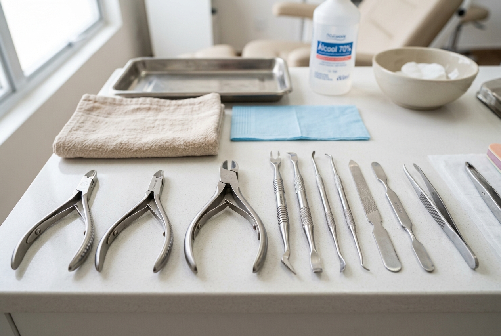
Afiação cirúrgica para alicates de manicure e pedicure. Bordas perfeitas, corte limpo, pressão de mola e alinhamento profissional para não danificar as unhas.
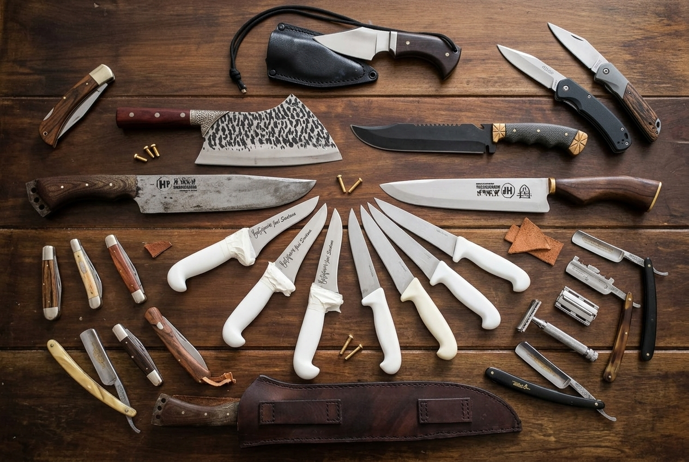
Facas de cozinha, churrasco, caça e pesca. Recuperamos o fio e corte original, recuperamos cabos e proporcionamos um corte suave e duradouro.
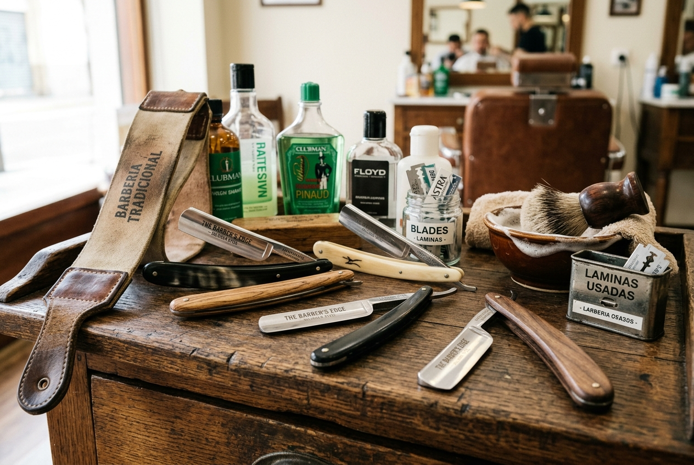
Navalhas de barbeiro, lâminas de barbear, pentes de tosa e estiletes. Afiação em lixas de cerâmica, pedra natural e couro/crtiça para um fio extremamente refinado.
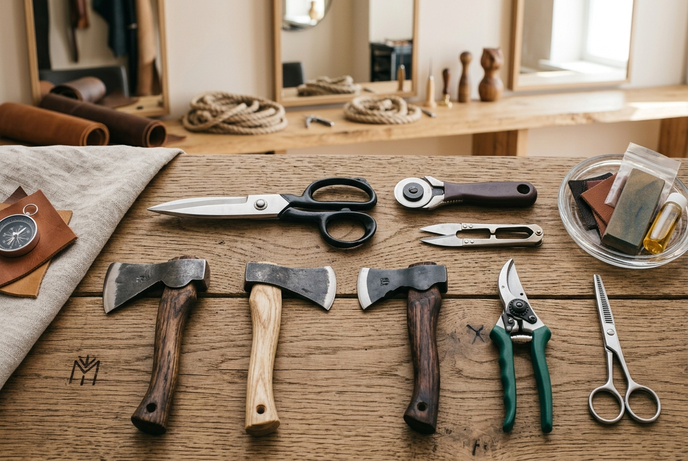
Tesouras para couro, tesouras de poda, machados e ferramentas industriais. Afiação técnica com ângulos específicos para cada uso.
Facas de mesa, garfos, colheres e utensílios de cozinha. Polimento e afiação para deixar seus talheres como novos.
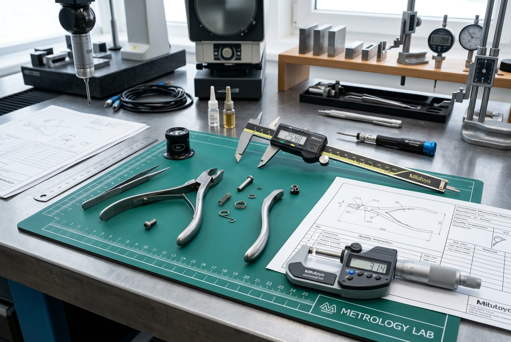
Limpeza, lubrificação, ajuste de mola e restauração completa de suas ferramentas. Serviço completo de cutelaria.
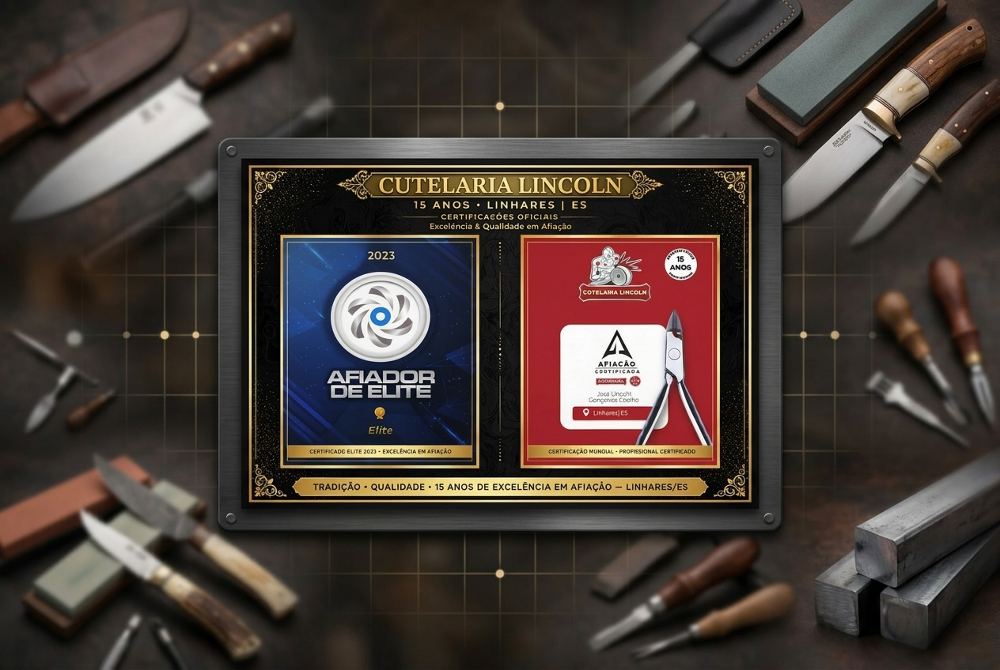
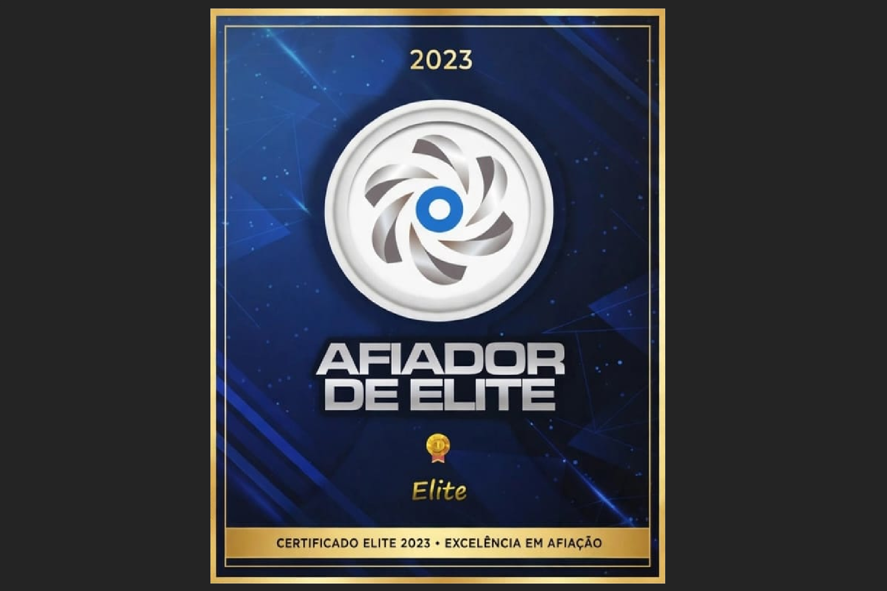
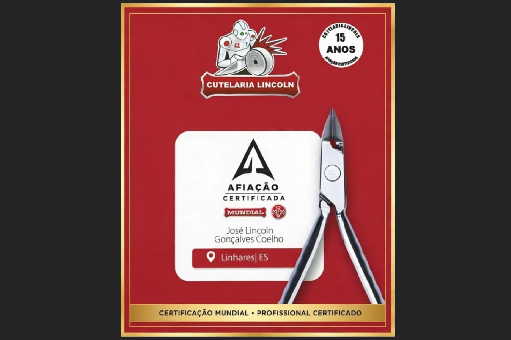
A Cutelaria Lincoln nasceu da paixão pelo ofício de afiar. Com anos de experiência, nos tornamos referência em afiação profissional de ferramentas de corte, atendendo desde manicures e barbeiros até chefs de cozinha e entusiastas. Utilizamos equipamentos de última geração combinados com técnicas tradicionais de cutelaria, garantindo que cada ferramenta receba o tratamento que merece.
Trabalhamos com um fluxo otimizado para garantir agilidade sem perder a qualidade que nos define.
Você traz suas ferramentas ou agendamos a retirada. Fazemos uma avaliação detalhada do estado de cada peça.
Analisamos o tipo de aço, o desgaste e definimos a melhor técnica de afiação para cada ferramenta.
Executamos a afiação com equipamentos de precisão, respeitando o ângulo ideal de corte e o tipo de material de cada ferramenta.
Testamos cada peça, lubrificamos, embalamos com cuidado e liberamos suas ferramentas afiadas como novas para retirada.
Conheça um pouco do nosso dia a dia e das ferramentas que passam por nossas mãos.
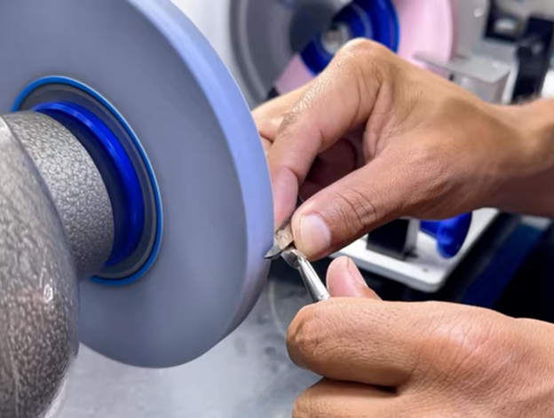
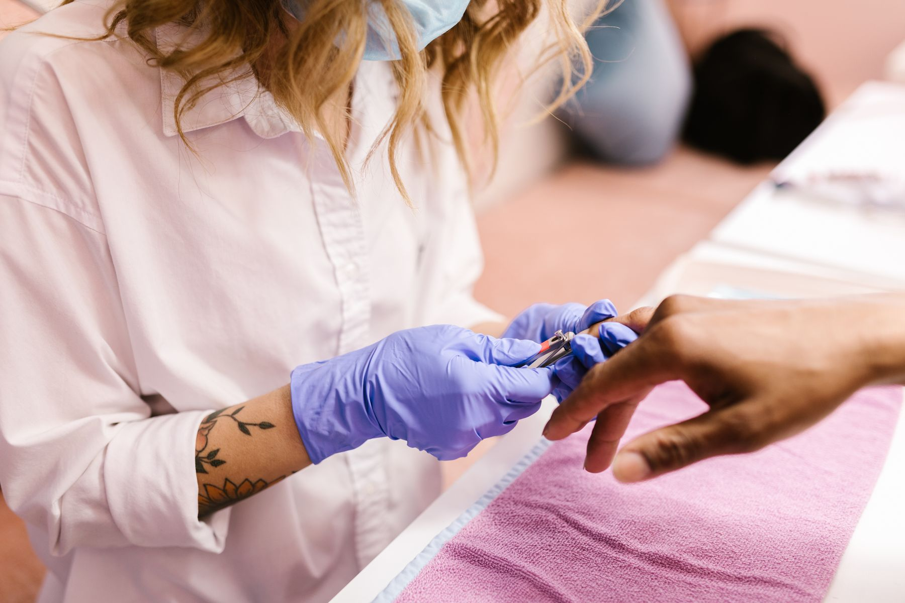
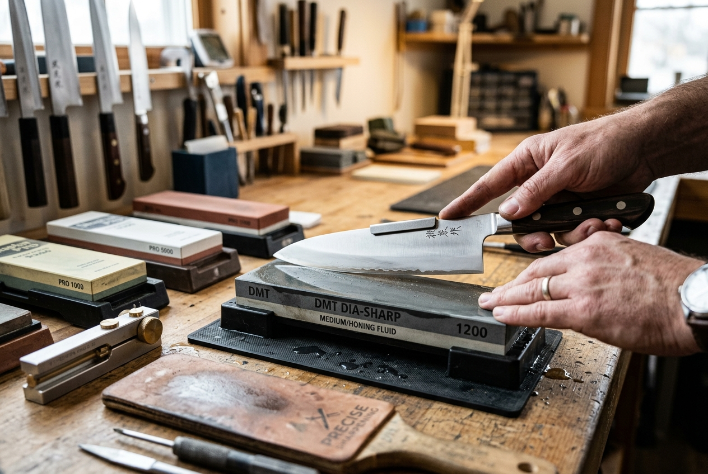
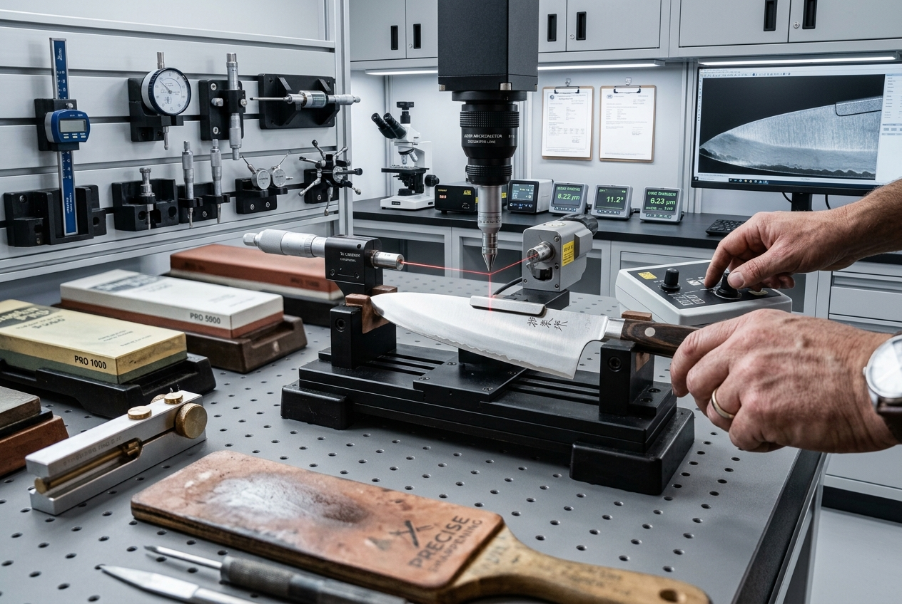
A satisfação de quem confia seu trabalho à Cutelaria Lincoln é nosso maior orgulho.
"Meus alicates de cutícula voltaram como novos! O corte ficou perfeito, preciso. Não confio em ninguém mais com minhas ferramentas de trabalho."
"Levei meu jogo de facas de churrasco e fiquei impressionado com o resultado. Corte limpo, rápido e o preço justo. Recomendo de olhos fechados!"
"Como barbeiro, preciso de navalhas sempre afiadas. A Cutelaria Lincoln entende do ofício. Atendimento excelente e entrega rápida. Nota 10!"
Entre em contato para solicitar um orçamento ou tirar dúvidas sobre nossos serviços.
Estamos prontos para atender você com a qualidade e dedicação que seu trabalho merece.
R. Guerino Ceolim, S/n - Q 22, Loja 03
Novo Horizonte, Linhares - ES
(27) 99984-0102
cutelarialincoln@hotmail.com
Segunda a Sexta: 8h às 17h